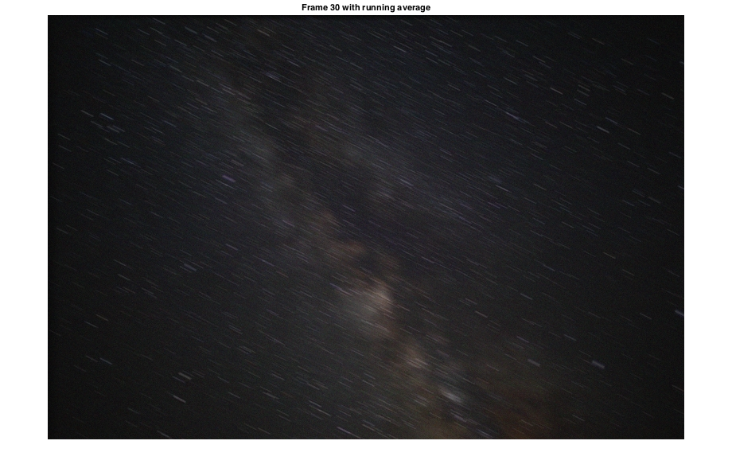
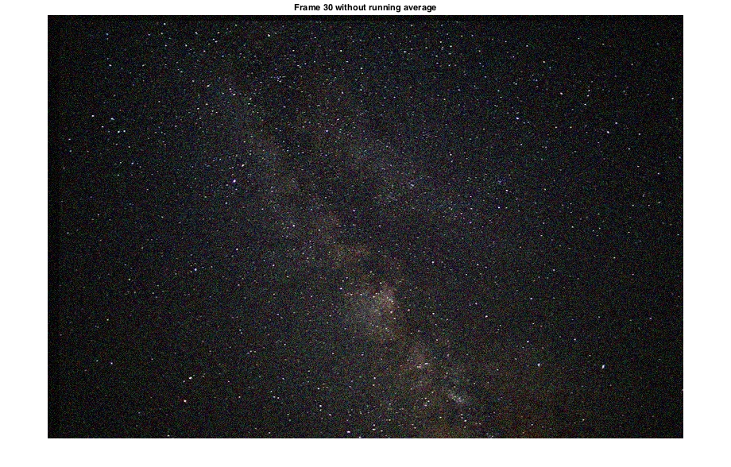
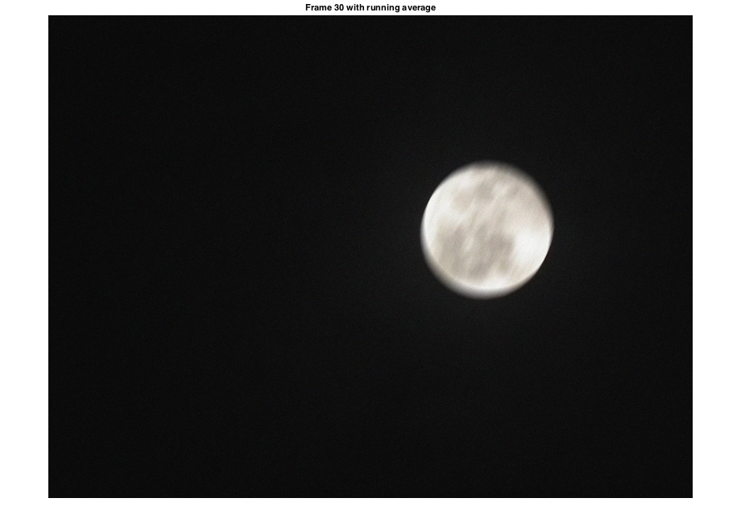
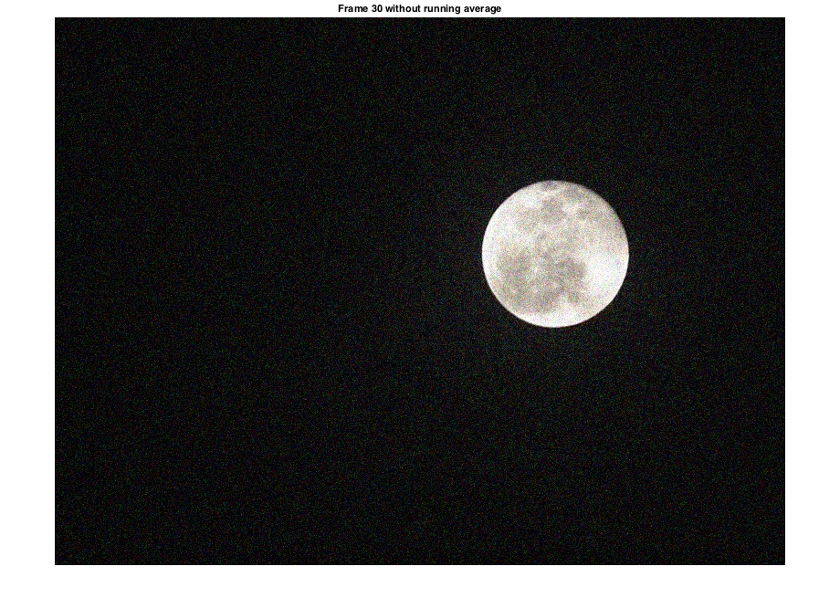
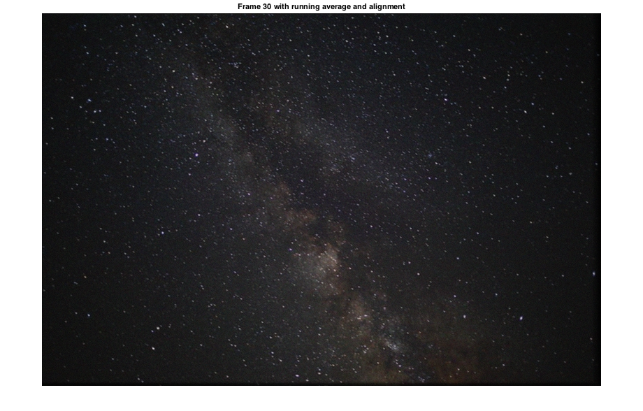
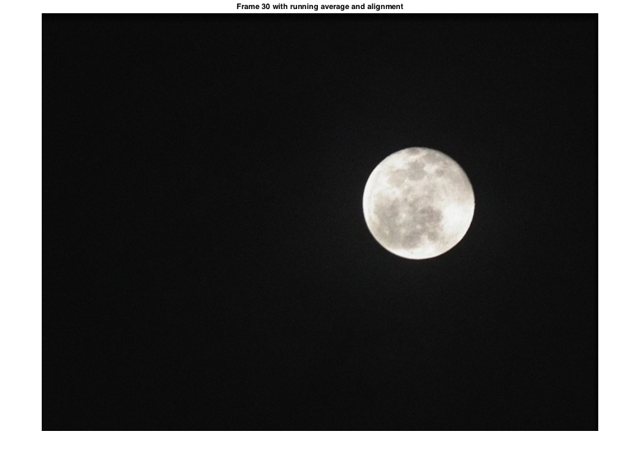

Contents
Question 2. Part A
clear all;
close all;
vidSky1 = VideoReader('hw1_data/hw1_sky_1.avi');
vidSky2 = VideoReader('hw1_data/hw1_sky_2.avi');
numFrames1 = get(vidSky1, 'NumberOfFrames');
numFrames2 = get(vidSky2, 'NumberOfFrames');
fAvg1(:,:,:,1) = im2double(read(vidSky1, 1));
fAvg2(:,:,:,1) = im2double(read(vidSky2, 1));
for i = 2 : numFrames1
frame1 = im2double(read(vidSky1, i));
fAvg1(:,:,:,i) = (i-1)/i * fAvg1(:,:,:,i-1) + 1/i * frame1;
frame2 = im2double(read(vidSky2, i));
fAvg2(:,:,:,i) = (i-1)/i * fAvg2(:,:,:,i-1) + 1/i * frame2;
if( i == 30)
frame1_30 = frame1;
frame2_30 = frame2;
end
end
figure; imshow(fAvg1(:,:,:,30));
title('Frame 30 with running average');
figure; imshow(frame1_30);
title('Frame 30 without running average');
figure; imshow(fAvg2(:,:,:,30));
title('Frame 30 with running average');
figure; imshow(frame2_30);
title('Frame 30 without running average');
   
Question 2. Part B
fAvg_align1(:,:,:,1) = im2double(read(vidSky1, 1));
fAvg_align2(:,:,:,1) = im2double(read(vidSky2, 1));
for i = 2 : 30
frame1 = im2double(read(vidSky1, i));
fAvg_align1(:,:,:,i) = (i-1)/i * fAvg_align1(:,:,:,i-1) + 1/i * Align(frame1, fAvg_align1(:,:,:,i-1));
frame2 = im2double(read(vidSky2, i));
fAvg_align2(:,:,:,i) = (i-1)/i * fAvg_align2(:,:,:,i-1) + 1/i * Align(frame2, fAvg_align2(:,:,:,i-1));
if( i == 30)
frame1_30 = frame1;
frame2_30 = frame2;
end
end
figure; imshow(fAvg_align1(:,:,:,30));
title('Frame 30 with running average and alignment');
figure; imshow(frame1_30);
title('Frame 30 without running average');
figure; imshow(fAvg_align2(:,:,:,30));
title('Frame 30 with running average and alignment');
figure; imshow(frame2_30);
title('Frame 30 without running average');
 